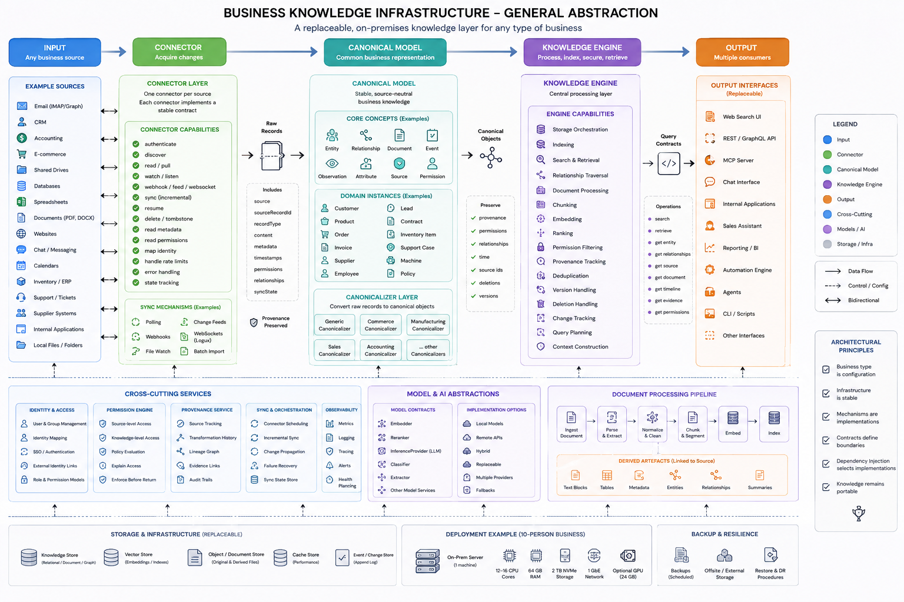

Current decision
Production NO-GO
Working prototype exists in narrow local/reference slices. Production adoption is not implied by passing tests or code presence.
0%qualified evidence obligations
Calculating…
Evidence boundary
Overall completion counts only obligations with production-relevant evidence. Denominator: 15 named qualification obligations below. COMPLETE = evidence-backed obligation; PARTIAL/UNPROVEN/BLOCKED/DEFERRED = zero. Test count is shown as context only and never contributes to percentage.
- Fresh local Nix evidence: PostgreSQL authority narrow slice.
- OIDC/JWKS code exists; live JWKS evidence absent.
- KMS, S3, Temporal, OTel live evidence absent.
- Purge/recovery/load/SLO/RPO/RTO evidence absent.
- Reference commits:
7de5dbaa,00cbc646,445a5163,ce63ede.
Reference architecture
pipelineflow.png label map
{kind=link}

Cards below use labels from this image. They do not claim every image capability is implemented.
Stage-by-stage
What is built, adopted, and proven
COMPLETEPARTIALUNPROVENBLOCKEDDEFERRED